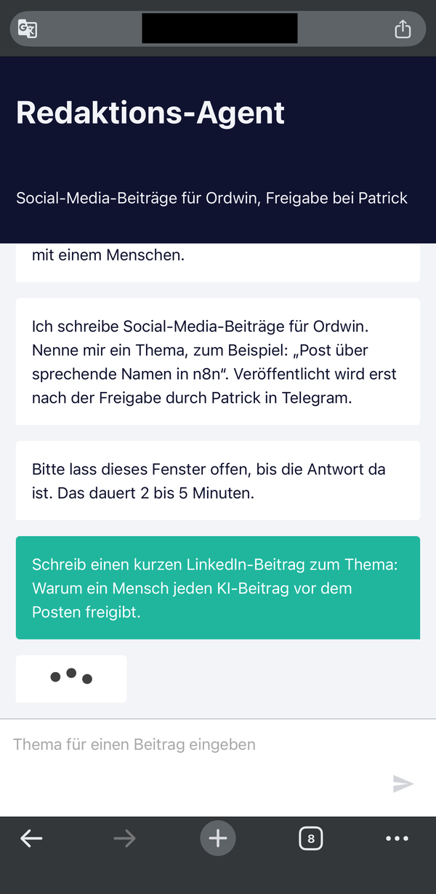
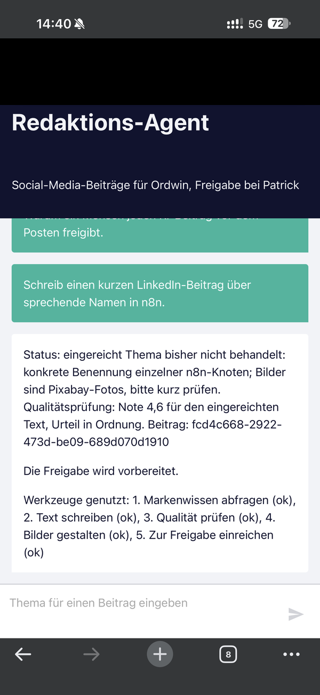
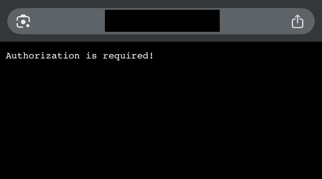

- Entscheidung: Chat-Seite am vorhandenen Chat-Eingang statt eigener Webseite. Der Eingang ist schon mit allen Testfällen geprüft, die Tür ändert nur den Zugang, nicht den Agenten.
- Schutz: Anmeldung mit Benutzername und Passwort, fest eingestellter Kunde Ordwin, die Antwort an den Browser enthält nur den Text und die Werkzeugliste.
- Sofortantwort: Die Chat-Seite antwortet, sobald das Paket eingereicht ist. Die Freigabe in Telegram läuft in einem eigenen Workflow, der ohne Warten gestartet wird.
- Sichtbar: Welche Werkzeuge der Agent in welcher Reihenfolge aufgerufen hat, mit Status.
- Fehlerfälle: 7 Fälle am Agenten und an der Chat-Seite gefunden, 6 behoben, 1 als Grenze beschrieben, dazu 5 bekannte Grenzen benannt (Kapitel 5).
- Test von außen: am 21.11.2026 vom Handy über Mobilfunk bestanden. Ohne Anmeldung weist die Seite ab, mit Anmeldung kam die Antwort mit Werkzeugliste nach 3:27,6 min (Lauf 4064). Grenze: Die Seite muss bis zur Antwort offen und im Vordergrund bleiben (Kapitel 6).
Kapitel 1
Ziele des Tages
Was an diesem Tag zu tun war, in eigener Gliederung.
- Ein Interface wählen, das zum Use Case passt (Kapitel 2).
- Ein einfaches Interface bauen (Kapitel 3).
- Prüfen, ob jemand anderes den Agenten darüber nutzen kann (Kapitel 4).
- Zusatz: sichtbar machen, welche Werkzeuge der Agent aufruft und wie er entscheidet (Kapitel 3).
Kapitel 2
Welches Interface und warum
Gewählt nach dem Use Case, nicht nach Gestaltungsfreiheit.
| Weg | Urteil | Grund |
|---|---|---|
| Chat-Seite am Chat-Eingang | gewählt | Der Eingang ist mit der Testtabelle aus W9 Tag 2 geprüft; die Seite liefert n8n selbst aus, Anmeldung ist eingebaut, kein weiterer Dienst. |
| Eigene Webseite mit Webhook | nicht gewählt | 2. Eingang, der neu gegen alle Fälle getestet und gegen Missbrauch abgesichert werden müsste, dazu ein Hosting-Dienst. |
| Bot in einem Messenger | nicht gewählt | Telegram ist schon der Kanal der Freigabe; Auftrag und Freigabe im selben Kanal würden die Rollen vermischen. |
| Leitstand-Seite | nur Anzeige | zeigt Beiträge und Läufe, man kann den Agenten darüber nicht ansprechen; als Tür ungeeignet. |
Kapitel 3
Was gebaut ist
Nur die Tür ist neu, der geprüfte Agent dahinter bleibt.
- Zugang: Die Chat-Seite ist öffentlich erreichbar, verlangt aber Benutzername und Passwort. Der Kunde steht fest auf Ordwin, das Modell kann ihn nicht wählen.
- Begrüßung: Die Seite nennt sich als KI-System und bittet, das Fenster offen zu lassen, weil ein Beitrag 2 bis 5 Minuten braucht.
- Werkzeuge sichtbar: Ein eigener Knoten am Ende baut die Zeile „Werkzeuge genutzt“: laufende Nummer, lesbarer Name, Status, keine Eingaben und keine Rohergebnisse. Er zeigt so viele Einträge, wie der Agent Werkzeuge aufrufen darf, im veröffentlichten Stand v26.5.3 sind das 14. Lokal mit 7 Fällen und einem Gegenfall geprüft, am 21.11.2026 auf der laufenden Chat-Seite gesehen: „Werkzeuge genutzt: 1. Markenwissen abfragen (ok), 2. Text schreiben (ok), 3. Qualität prüfen (ok), 4. Bilder gestalten (ok), 5. Zur Freigabe einreichen (ok)“ (Lauf 4064, Foto unten). Die Entscheidung des Agenten zeigt die Antwort über den Status (eingereicht oder Rückfrage), den Hinweis an den Menschen und die Note.
- Sofortantwort und Freigabe getrennt: Wartet derselbe Workflow auf den Klick in Telegram, hängt die Chat-Seite bis zu 24 Stunden. Deshalb startet der Hauptworkflow die Freigabe als eigenen Workflow ohne Warten und antwortet sofort. Gemessen an einer Testkopie: mit offenem Fenster (Läufe 3974, 3981) und mit geschlossenem Fenster (Läufe 3938, 3954) läuft die Freigabe weiter. Ablehnen mit Grund ist in den Läufen 4000 und 4017 belegt.





![Datenflussbild des Redaktions-Agenten, Endstand 20.11.2026 mit Hauptworkflow v26.5.2 und Systemprompt v4.4: Auftraggeber auf der Chat-Seite mit Anmeldung, Sofortantwort mit Werkzeugliste zurück (D19), S1 Eingang prüfen, C KI-Kennzeichnung, S2 Redaktions-Agent mit 6 Werkzeugen, Supabase mit Laufzeile vor dem Freigabe-Start, OpenRouter, Pixabay, Cloudflare Workers AI, Gotenberg, S8 Beitrag prüfen, Freigabe als eigener Workflow ohne Warten, Ablage in Nextcloud nur nach Freigabe; Pfeile D1 bis D21, rechts die Tabelle der 23 Datenflüsse.](plan/plan-w09t03-v26.png)
Kapitel 4
Test von außen
Ein eigener Test von einem 2. Gerät, kein Test durch eine andere Person.
Es stand keine andere Person für den Test bereit. Deshalb habe ich den Zugang am 21.11.2026 selbst von einem 2. Gerät geprüft, einem Handy über Mobilfunk (5G), also nicht aus dem eigenen Netz: nur die Chat-Seite, nur der fest eingestellte Kunde, Anmeldung wie für jeden anderen Nutzer.
| Prüfpunkt | Erwartung | Ergebnis |
|---|---|---|
| Aufruf ohne Anmeldung | abgewiesen | bestanden: Die Seite zeigt nur „Authorization is required!“ (Foto unten). |
| Anmeldung und Auftrag | Sofortantwort mit KI-Hinweis und Werkzeugliste | bestanden im 2. Versuch, Lauf 4064: Begrüßung mit KI-Hinweis, Antwort mit Note 4,6 und Zeile „Werkzeuge genutzt“ (5 Werkzeuge), Lauf 3:27,6 min (Fotos in Kapitel 3). Im 1. Versuch (Lauf 4056) kam auf der Seite keine Antwort an, weil das Handy während der Wartezeit gesperrt oder die App gewechselt war. Der Knoten „Antwort senden“ hat die Antwort gesendet und wartet, bis die Chat-Seite sie abholt; niemand holte sie ab, deshalb steht die Ausführung in n8n im Status „Waiting“. Einreichung, Freigabe und Ablage waren davon nicht betroffen (Kapitel 6). |
| Freigabe danach | Vorschau kommt in Telegram, unabhängig vom Fenster | bestanden: Die Freigabe-Nachricht kam in Telegram, nach „Freigeben“ lag der Beitrag in Nextcloud (Läufe 4056 und 4064, Beitragsstatus „fertig“, Fotos in W9 Tag 4, Kapitel 5). Auch beim 1. Versuch ohne Antwort auf der Seite lief die Freigabe weiter. Der Freigabe-Workflow lief dazu als eigener Lauf: 4062 zu Lauf 4056 und 4070 zu Lauf 4064. |
Die Chat-Seite antwortet nur, wenn der Hauptworkflow veröffentlicht ist. Vor der 1. Veröffentlichung liefen am 19. und 20.11.2026 unabhängige Prüfrunden, am 20.11.2026 3 Runden über den ganzen Hauptworkflow. Die gefundenen Fehler stehen in Kapitel 5, die letzte Runde fand keinen mittleren oder schweren Fehler mehr. Veröffentlicht ist der Hauptworkflow seit dem 21.11.2026 um 14:03, zusammen mit dem Freigabe-Workflow und dem Text-Werkzeug. Der Test von außen lief danach am veröffentlichten Eingang.


Kapitel 5
Fehlerfälle und Fixes
Was am Agenten und an der Chat-Seite schiefging, warum, und wie es geprüft ist.
Vor der 1. Veröffentlichung habe ich den Hauptworkflow nicht nur am geänderten Teil prüfen lassen, sondern als Ganzes. Jede Prüfrunde lief unabhängig vom Bau und hatte den Auftrag, Fehler zu finden. Die Fehler unten stammen aus diesen Runden vom 19. und 20.11.2026. Getestet habe ich die Fixes am Code jedes Knotens mit festen Proben, jeweils alter Stand gegen neuen Stand. Volle Läufe über die veröffentlichte Chat-Seite folgten am 21.11.2026 (Kapitel 4). Was den Freigabe-Workflow, die Rückmeldungen der Datenbank und das Text-Werkzeug betrifft, steht in W9 Tag 4, Kapitel 8.
| Nr | Was schiefging | Ursache | Fix | Wie getestet | Stand |
|---|---|---|---|---|---|
| 1 | Die Grenze von 12 Werkzeugaufrufen war zu knapp. Mit Qualitätsprüfung, 1 Nachbesserung und der erneuten Prüfung braucht ein Auftrag 13 bis 14 Aufrufe, der Agent wäre mitten in der Schleife abgewiesen worden. | Die Grenze stammte aus der Zeit vor Werkzeug 6. | Grenze 14 im Systemprompt, in der Ausgabeprüfung und in der Werkzeuganzeige, Iterationsgrenze des Agenten von 14 auf 16. | 36 Proben (vorher 25 von 36 grün): 14 regelgerechte Aufrufe laufen ohne Fund durch, 15 werden abgewiesen. | behoben |
| 2 | Die Grenze von 14 Aufrufen wirkt erst, wenn der Agent fertig ist. Ein 15. Aufruf, zum Beispiel eine 2. bezahlte Recherche, läuft also noch, bevor die Antwort verworfen wird. | Die Iterationsgrenze des Agenten zählt Modellrunden, nicht Werkzeugaufrufe. Gemessen an einer verkleinerten Messkopie: In 1 Runde rief der Agent 5 Werkzeuge gleichzeitig auf (Lauf 4043), bei einer Grenze von 3 Runden lief der letzte Aufruf noch (Lauf 4042). | Eine harte Grenze vor jedem Aufruf gibt es im Agentenknoten nicht. Die Iterationsgrenze bleibt 16, die Prüfung bei 14 ist in Notizen und Code jetzt ehrlich als nachträgliche Ausgabeprüfung beschrieben. | 2 Messläufe an der Messkopie mit erfundenen Daten. | bekannte Grenze, beschrieben |
| 3 | Der Agent schrieb sich selbst eine Note in die Antwort, zum Beispiel „Bewertung 4,4 von 5 Qualitätspunkten“, ohne dass Werkzeug 6 gelaufen war. Der Filter ließ das durch. | Der Notenfilter war am 19.11.2026 gegen Fehlalarme enger gefasst worden und erkannte danach Ziffernbewertungen mit „Bewertung“ und „Score“ nicht mehr. | Der Filter erkennt Ziffernbewertungen wieder und entfernt nur den Notenteil eines Satzes, echter Inhalt wie „n8n“ bleibt stehen. Gleicher Filter in der Ausgabeprüfung und in der Freigabe-Nachricht, zeichengleich. | 38 Notenformen: 29 erkannt (vorher 21). 22 Inhaltsproben: 18 unverändert wie vorher, keine Probe schlechter. | behoben |
| 4 | Der neue Filter hielt Zahlen für Noten: „Bewertung 4 von 5.000 Euro“ oder „Score 1.200 Zeichen“ wurden als Note gelesen und aus dem Text genommen. | Hinter der 5 wurde nicht geprüft, ob ein Dezimal- oder Tausendertrenner folgt. | Hinter der 5 darf kein Trenner mit weiteren Ziffern folgen. „4 von 5“, „4 von 5,0“ und „5,00“ bleiben Noten, „5.000“ und „5,5“ nicht. | 65 bisherige Proben unverändert, 23 neue Notenfälle ohne Abweichung. | behoben |
| 5 | Ein erkannter Schlüssel konnte im Laufprotokoll landen. Probe mit einem erfundenen Testschlüssel: Die Ausgabeprüfung verwarf die Antwort, das Protokoll speicherte den Schlüssel trotzdem in 2 Feldern. | Das Protokoll übernahm Freitextfelder des Agenten auch dann, wenn die Antwort verworfen war. | Bei verworfener Antwort speichert das Protokoll nur feste Fehlercodes. Freitext wird vor dem Speichern immer geschwärzt. | Probe mit erfundenem Schlüssel und Zugangskennung: nichts davon im Protokoll, der Fehlercode bleibt. Teil von 81 Proben, 0 rot. | behoben |
| 6 | Die Chat-Seite konnte ohne Antwort bleiben. Fehlt der eingereichte Beitrag beim Nachlesen, antwortet die Datenbank erfolgreich mit einer leeren Liste. n8n gibt dann nichts weiter, weder an die Freigabe noch an den Fehlerweg. Außerdem galt eine gekürzte Beitragskennung mit 8 Zeichen als passend zur vollen Kennung. | Die Abfrage prüfte nicht, ob genau 1 Beitrag zurückkam, und der Vergleich der Kennung war ein Teilvergleich. | Die Kennung muss vollständig und zeichengleich sein. Die Abfrage verlangt genau 1 Beitrag, kein oder mehrere Treffer laufen in den Fehlerweg mit Meldung und Chat-Antwort. | Proben mit voller, gekürzter, fremder und anders geschriebener Kennung; nur die volle passende wird angenommen. In der nächsten Prüfrunde bestätigt. | behoben |
| 7 | Die Sofortantwort sagte „Der Beitrag liegt zur Freigabe bei Patrick in Telegram“, obwohl zu diesem Zeitpunkt nur der Start des Freigabe-Workflows belegt ist. | Der Freigabe-Workflow startet ohne Warten, der Hauptworkflow bekommt keine Bestätigung der Zustellung. | Die Sofortantwort sagt jetzt „Die Freigabe wird vorbereitet.“ Scheitert der Freigabe-Workflow danach, meldet er das selbst in Telegram. | Wortlaut im Export geprüft, in der nächsten Prüfrunde bestätigt. | behoben |
Bekannte Grenzen
- Ein Thema, das selbst eine Bewertung ist, sieht für den Filter wie eine Note aus. Beispiel: Ein Auftrag über die „Google-Bewertung 5 von 5 Sternen“. Fragt der Agent dazu zurück, ohne Werkzeug 6 aufzurufen, wertet die Ausgabeprüfung das als Note ohne Prüfung.
- Notenangaben ohne Schlüsselwort wie „Der Text erhielt 4 von 5 Punkten.“ und Noten in Worten erkennt der Filter nicht. Darunter steht dann die Zeile des Workflows „Achtung, Endtext ungeprüft“, und die gilt.
- Schreibt der Agent seinen Hinweis in 2 Zeilen und beginnt die 2. Zeile mit einer Ziffernnote, kann der ganze Hinweis wegfallen. Der Systemprompt verlangt 1 Satz, der Fall ist selten.
- Die Grenze von 14 Werkzeugaufrufen ist eine nachträgliche Prüfung (Fall 2).
- Die Chat-Seite bekommt ihre Antwort nur, solange sie offen und aktiv ist. Der letzte Knoten „Antwort senden“ sendet die Antwort und wartet, bis die Chat-Seite sie abholt. War die Seite zu (Handy gesperrt oder App gewechselt, Lauf 4056) oder lief der Lauf im Editor ohne Chat-Seite (Lauf 4047), holt sie niemand ab, und die Ausführung bleibt in n8n im Status „Waiting“ stehen. Einreichung, Freigabe und Ablage sind davon nicht betroffen (Kapitel 4).
Kapitel 6
Bekannte Einschränkungen
Was beim Test von außen am 21.11.2026 aufgefallen ist und bei der Nutzung gilt.
- Seite bis zur Antwort offen und aktiv lassen. Die Antwort braucht rund 2 bis 5 Minuten (gemessen 1:59,3 bis 3:45,5 min). Wird das Handy in dieser Zeit gesperrt oder die App gewechselt, trennt es die Verbindung: Die Antwort erscheint auf der Seite nicht. Der Knoten „Antwort senden“ wartet dann weiter darauf, dass die Seite die Antwort abholt, und die Ausführung bleibt in n8n im Status „Waiting“ stehen (1. Versuch, Lauf 4056; ebenso der Lauf 4047 im Editor). Einreichung, Freigabe und Ablage waren davon nicht betroffen. Mit Bildschirm an und Browser im Vordergrund kam sie an (Lauf 4064). Der Hinweis in der Begrüßung bleibt, die Demo läuft am PC.
- Einfache Zeilenumbrüche der Antwort zeigt die Seite als Leerzeichen: „Status: eingereicht“ und der folgende Hinweis stehen in einer Zeile (Foto in Kapitel 3). Absätze bleiben erhalten.
- Gemessen ist die Antwortzeit von außen an 1 Lauf mit Antwort (4064, 3:27,6 min).